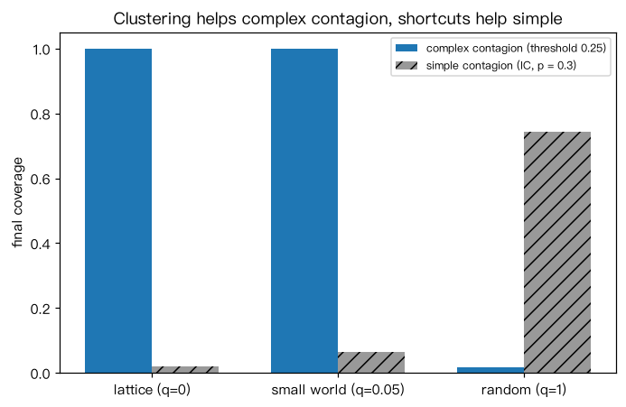

Example13 / 14
复杂传染——阈值模型在聚集网络与随机网络上的级联
线性阈值模型：节点在已激活邻居比例 ≥ θ 时被激活（θ=0.25）。 比较三种平均度相同（k=6）的网络：环形格子（高聚集）、少量重连的小世界网络、完全随机重连。 种子为格子上相邻的一小段节点。对比：独立级联（简单传染，p=0.3）在同样网络上的覆盖率。 解读：复杂传染在聚集的格子上能传遍网络，在随机网络上卡在种子附近； 简单传染恰好相反——随机捷径让它传得更快更远（Centola 与 Macy 2007）。
Output输出图

Output文字输出
重连概率 0.00 聚集系数 0.60 阈值模型覆盖 1.000 独立级联覆盖 0.021 重连概率 0.05 聚集系数 0.52 阈值模型覆盖 1.000 独立级联覆盖 0.065 重连概率 1.00 聚集系数 0.00 阈值模型覆盖 0.017 独立级联覆盖 0.743
Code代码
# 线性阈值模型：节点在已激活邻居比例 ≥ θ 时被激活（θ=0.25）。
# 比较三种平均度相同（k=6）的网络：环形格子（高聚集）、少量重连的小世界网络、完全随机重连。
# 种子为格子上相邻的一小段节点。对比：独立级联（简单传染，p=0.3）在同样网络上的覆盖率。
# 解读：复杂传染在聚集的格子上能传遍网络，在随机网络上卡在种子附近；
# 简单传染恰好相反——随机捷径让它传得更快更远（Centola 与 Macy 2007）。
import numpy as np
import networkx as nx
N, kdeg, theta = 1000, 6, 0.25
seeds = list(range(6))
def threshold_cascade(G):
active = set(seeds); changed = True
while changed:
changed = False
for v in G:
if v not in active:
nb = list(G.neighbors(v))
if nb and sum(u in active for u in nb) / len(nb) >= theta:
active.add(v); changed = True
return len(active) / G.number_of_nodes()
def ic_cover(G, p, rng, runs=50):
out = []
for _ in range(runs):
active, frontier = set(seeds), list(seeds)
while frontier:
nxt = []
for u in frontier:
for v in G.neighbors(u):
if v not in active and rng.random() < p:
active.add(v); nxt.append(v)
frontier = nxt
out.append(len(active) / G.number_of_nodes())
return np.mean(out)
rng = np.random.default_rng(0)
qs, cov_thr, cov_ic = [0.0, 0.05, 1.0], [], []
for q in qs:
G = nx.watts_strogatz_graph(N, kdeg, q, seed=1)
cov_thr.append(threshold_cascade(G)); cov_ic.append(ic_cover(G, 0.3, rng))
print("重连概率 %.2f 聚集系数 %.2f 阈值模型覆盖 %.3f 独立级联覆盖 %.3f"
% (q, nx.average_clustering(G), cov_thr[-1], cov_ic[-1]))
import matplotlib.pyplot as plt
fig, ax = plt.subplots(figsize=(6.4, 4.2))
x = np.arange(len(qs))
ax.bar(x - 0.18, cov_thr, 0.36, color="tab:blue", label="complex contagion (threshold 0.25)")
ax.bar(x + 0.18, cov_ic, 0.36, color="0.6", hatch="//", label="simple contagion (IC, p = 0.3)")
ax.set_xticks(x, ["lattice (q=0)", "small world (q=0.05)", "random (q=1)"])
ax.set_ylabel("final coverage"); ax.set_ylim(0, 1.05); ax.legend(fontsize=8)
ax.set_title("Clustering helps complex contagion, shortcuts help simple")
plt.tight_layout(); plt.show()Run在浏览器中运行
首次加载 Python 环境约需 20–40 秒；可以修改参数后重新运行。